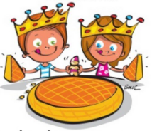

Visite musée P'tit Moulin (Cernay), Projet du Moulin d'Ollainville… (Rendez-vous à prendre). Sans oublier nos études en cours des moulins sur la Juine (Méréville, Saclas, Auvers et Lardy), sur la Chalouette, sur l’Orge (Ollainville, Sermaises, Roinville), sur l’Ecole et sur l’Essonne + moulins de Senlis (Montgeron) et de Vauboyen (Bièvres).
21 septembre : Exposition - Conférence - Débat "La Juine et ses Usines" dans le cadre des Journées Européennes du Patrimoine - Salle des fêtes de Morigny-Champigny de 14h à 18h.
La Juine et ses usines
7 - 8 septembre : Forum des associations d'Etampes de 9h à 15h.
5 septembre 2024 : Départ de notre Grand Louchet dans les Hauts de France.
Invitation
Juin : Ronde des Moulins du quartier Saint-Martin avec Etampes-Histoire.
Février : Notre premier Conseil d’Administration 2024.
Janvier
12 janvier : Galette des Reines Salle Saint-Antoine (17h30-19h).

2023
Décembre
02-dec : Marché de Noël à Etrechy.
Novembre
15-nov : Notre dernier Conseil d’Administration 2023.
13-nov : Présentation de l’Association à l’Ehpad Etrechy.
12-nov : Marché moulin de Chatillon + 13 + aujourd’hui 15 CA.
Octobre
09-oct : Université du Temps Libre : Conférence « La Juine au fil des siècles » par JJ Renard.
01-oct : Parution du Livret N°20 d’Etampes Histoire avec notre article sur le pont St Martin.
Septembre
16-17-sep : Journées Européennes du Patrimoine, Etampes, Exposition Anne de Pisseleu
15-sep : Visite avec M. Isnard, député 3° circonscription, de nos trois moulins sur l’Orge.
9-10-sep : Forum Associations, Etampes
Juillet - Août
Enregistrement Petite Rivière FR3 et Diffusion sur FR3.
Juin
JPPM - Circuit des Moulins de l'ancien quartier Notre-Dame d'Etampes
Le 25 après-midi : Visite guidée du moulin de la Bête à Ollainville (91)
Le 24 après-midi : Visite guidée avec Etampes Histoire
Le 23 après-midi : Rendez-vous scolaire Place du Port
Mai
Du 6 au 9 mai : Congrès de la Fédération dans le Périgord